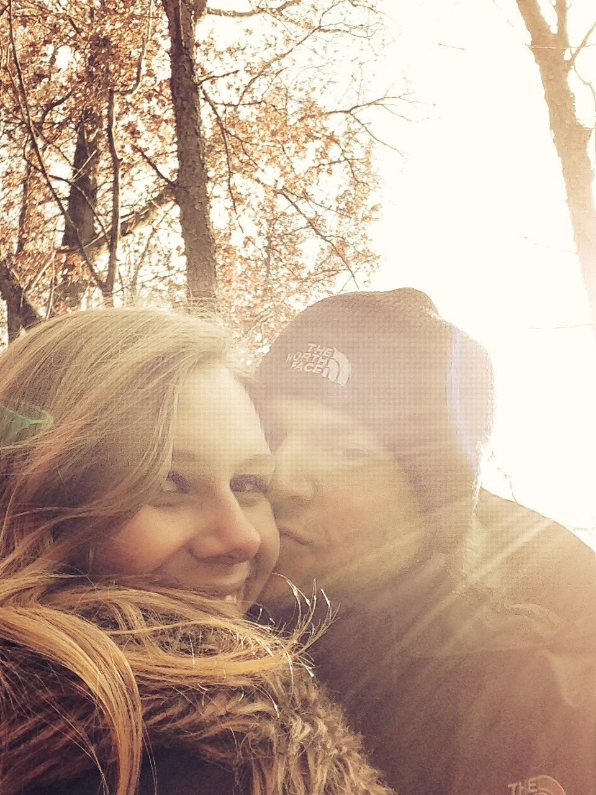

K+MJuly 8th, 2017Maine Maritime Museum
|
 | Welcome! We can't wait to celebrate with you in July! Our website is still in progress, but we will continue filling in the details as we get closer to the date. Please excuse the aesthetic - Michael is stubbornly designing this website (poorly) from scratch... |
We have reserved a block of rooms at the lovely Hampton Inn. The hotel is about 2 miles away from the venue and we will be providing transportation to and from the wedding.